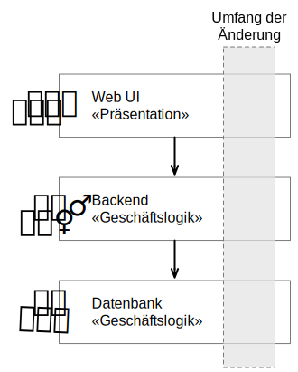
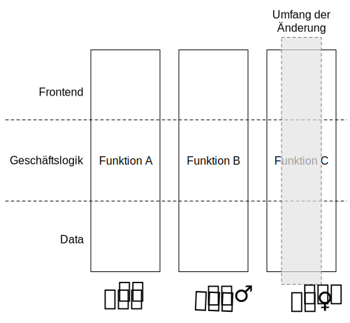
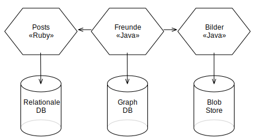
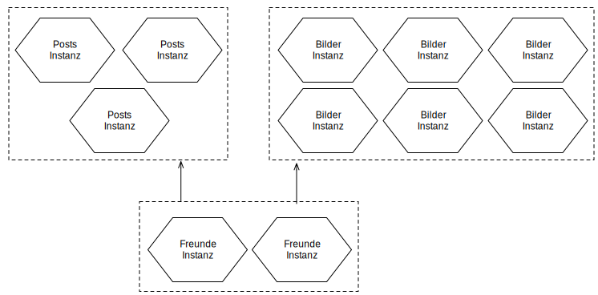

Langlebige Transaktionen mit Hilfe choreografierter Sagas

Prof. Dr. Michael Eichberg
2024-02-16
Microservices
Ein einfacher Microservice, der eine REST Schnittstelle anbietet und Ereignisse auslöst.
Wo liegen hier die Herausforderungen?
Ein große Herausforderung ist das Design der Schnittstellen. Um wirkliche Unabhängigkeit zu erreichen, müssen die Schnittstellen sehr gut definiert sein. Sind die Schnittstellen nicht klar definiert oder unzureichend, dann kann das zu viel Arbeit und Koordination zwischen den Teams führen, die eigentlich unerwünscht ist!
können unabhängig bereitgestellt werden (independently deployable)
und werden unabhängig entwickelt
modellieren eine Geschäftsdomäne
Häufig entlang einer Kontextgrenze (eng. Bounded Context) oder eines Aggregats aus DDD
verwalten Ihren eigenen Zustand
d. h. keine geteilten Datenbanken
sind klein
Klein genug, um durch (max.) ein Team entwickelt werden zu können
flexibel bzgl. Skalierbarkeit, Robustheit, eingesetzter Technik
erlauben das Ausrichten der Architektur an der Organisation (vgl. Conway's Law)
Traditionelle Schichtenarchitektur
Microservices Architektur
Microservices sind flexibel bzgl. des Technologieeinsatzes und ermöglichen den Einsatz der geeignetsten Technologie.
Sauber entworfene Microservices können sehr gut skaliert werden.
Implementierung einer langlebigen Transaktion?
Die Implementierung von Transaktionen ist eine der größten Herausforderungen bei der Entwicklung von Microservices.
Aufteilung einer langlebigen Transaktion mit Hilfe von Sagas
Die orchestrierte Saga ist eine Möglichkeit, um langlebige Transaktionen zu implementieren.
Mental einfach
Hoher Grad an Domain Coupling
Da es sich im Wesentlichen um fachlich getriebene Kopplung handelt, ist diese Kopplung häufig akzeptabel. Die Kopplung erzeugt keine technischen Schulden (technical debt).
Hoher Grad an Request-Response Interaktionen
Gefahr, dass Funktionalität, die besser in den einzelnen Services (oder ggf. neuen Services) unterzubringen wäre, in den Bestellung Service wandert.
Die Wahl der Softwarearchitektur ist immer eine Abwägung von vielen Tradeoffs!
Weitere Aspekte, die berücksichtigt werden können/müssen:
Cloud (und ggf. Serverless)
Mechanical Sympathy
Testen und Deployment von Mircoservices (Stichwort: Canary Releases)
Monitoring und Logging
Service Meshes
...
Sam Newman, Building Microservices: Designing Fine-Grained Systems, O'Reilly, 2021.